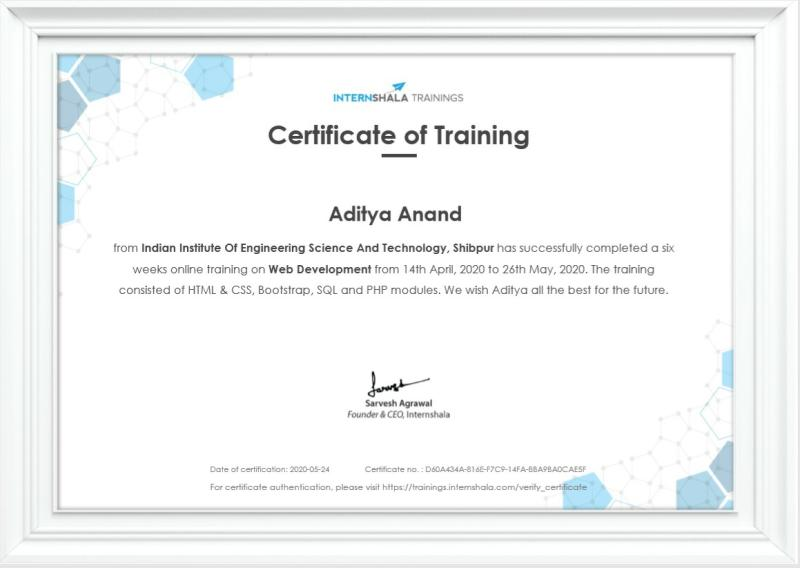
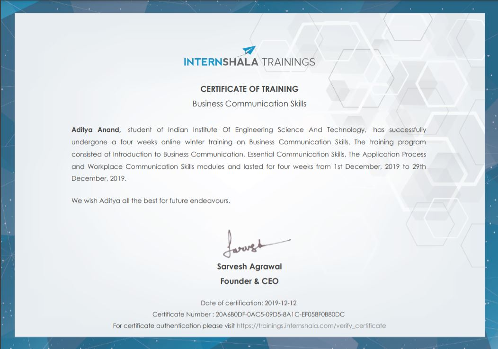

Aditya Anand
2nd Year Undergrad at IIEST, Shibpur in Information technology.
Conatct Information
- +91 7484822412
- aditya.brdav2357@gmail.com
- /aditya-anand-b24842198/
- Begusarai,Bihar,IN-851117
Skills
- HTML
- CSS
- C++
- C
- Data Structure and Algorithm
- Github
- MySql
- MATLAB
- Wordpress
- Office Suite
languages
- English
- Hindi
About
I am an undergrad at Indian Institute of Engineering Science and Technology, Shibpur pursuing B.Tech. Information Technology.
I am a tech enthusiast with a knack of learning new things who likes to explore aspects of computer science. Motivated to learn and grow.
Education
- June2019-May2023
B.Tech in Information Technology
Indian Institute of Engineering Science and Technology
Shibpur, West Bengal
CGPA upto 3rd Semester=8.9
- April 2018-April 2019
CBSE Senior Secondary Class XII
BRDAV Public School
Begusarai, Bihar
Percentage obtained- 84%
- April 2016-April 2017
CBSE Secondary Class X
BRDAV Public School
Begusarai, Bihar
Cumlative Grade point Average- 9.8
Certificates
1) Successfully completed and passed in a six weeks online certified training on Web Development. The training consisted of HTML & CSS, Bootstrap, SQL and PHP modules.

2) Successfully completed and passed in a four weeks online winter training on Business Communication Skills. The training program
consisted of Introduction to Business Communication, Essential Communication Skills.

3) Successfully completed training program on Business Analytics Complete Course on udemy.
Courses
-
Data Structures & Algorithms
-
Discrete Math & Graph Theory
-
Formal Language & Automata Theor
-
Computer Graphics
-
Computer Org & Architectures
-
Signals and Systems
Extra Curriculars Activities
-
Treasurer of Society of Information Technology, IIEST,Shibpur
- Had taken care of the expenditure in the fests.
- coordinated the sponsers to meet the requirement in the fests.
-
Publicity Associate at Instruo(IIEST Shibpur TechFest)
- Performed my work with perfection and it was the Kolkata's largest Techfest.
- Developed lots of skills of managing events.
-
Year Representative of Dept of Information Technology, IIEST,Shibpur
- Served as the channel of communication between the students and faculty.
- coordinated any departmental issue or program.
-
Joint Mess Commitee Representative of hostel in IIEST, Shibpur
- Served as the channel of communication between the boarders and warden.
- Ensure the proper mess food, its billing and maintenance of the hostel.
-
Was Head Boyof BRDAV Public School
- Was choosen due to skills of managing events.
- Hosted Annual Fuction Yojna in year 2018
-
Active member at CameraBuff (Official videography club of IIEST, Shibpur)
- Learnt and teached many cinematic shots.
- Increased my coversation skills